群，环，域总结
[TOC]
群
映射
设A，B是两个非空集合，若对A中的任一元素x，依照某种规律或者法则f，恒有B中唯一确定的元素y与之对应，则称f为一个从A到B的映射。
满射
单射
双射
变换
一个从集合A映射到集合A的映射成为变换
变换群
A上的所有双射变换构成的集合在变换的复合下构成变换群T（A）
且若A是有限集，则T(A)称作置换群，如果|A| = n，则其称作n元对称群，记作\(S_n\) 且其大小为 n！
三元对称群
三元对称群是由所有将 \(3\) 个元素互换的置换组成的群，记作 \(S_3\)，其共有 \(3!=6\) 个元素。
可以用符号排列的方式表示这些置换，其中 \(\sigma \in S_3\)，\(\sigma\) 作用于集合 \({1,2,3}\)：
- \(\sigma = \operatorname{（1）}\)，表示恒等置换，即不进行任何置换。
- \(\sigma = (1\ 2)\)，表示将 \(1\) 和 \(2\) 互换的置换。
- \(\sigma = (1\ 3)\)，表示将 \(1\) 和 \(3\) 互换的置换。
- \(\sigma = (2\ 3)\)，表示将 \(2\) 和 \(3\) 互换的置换。
- \(\sigma = (1\ 2\ 3)\)，表示将 \(1,2,3\) 三个元素循环左移一个位置的置换。
- \(\sigma = (1\ 3\ 2)\)，表示将 \(1,2,3\) 三个元素循环右移一个位置的置换。
其中，例如 \((1\ 2)\) 表示将 \(1\) 和 \(2\) 互换的置换，可以表示为：
(123213)(122133)
这里第一行表示原始的元素，第二行表示经过置换后的元素。其他置换类似。
置换
有限群上的变换称为置换
对换
只含有两个元素的置换称作对换
且每个置换都可以写成循环置换的乘积
而循环置换总能写成对换的乘积
交错群
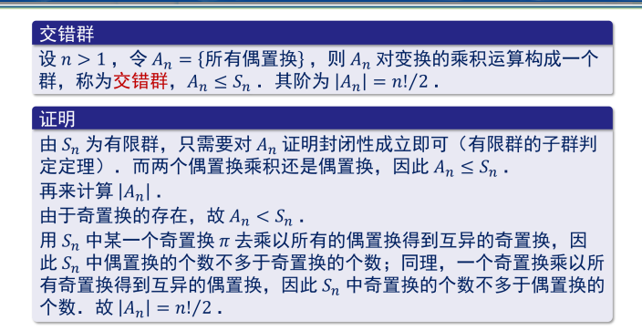
交换群的左陪集等于右陪集
同态映射
其本质是保持运算
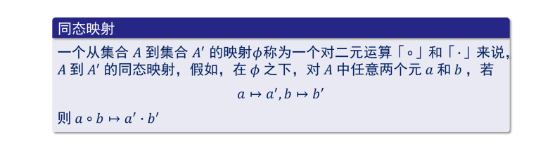
群的同态映射的性质
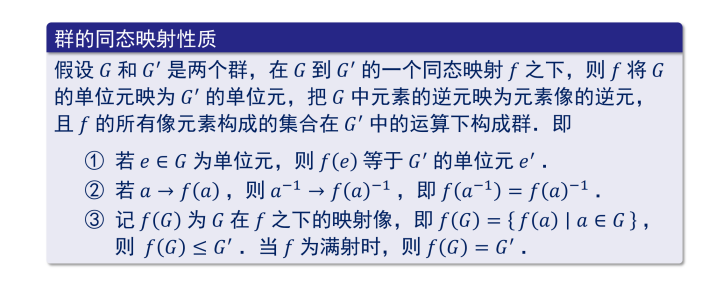
同构映射
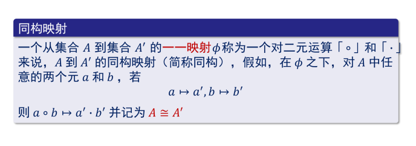
同构映射注记
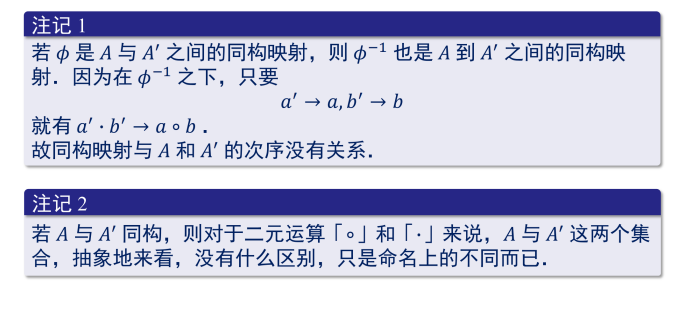
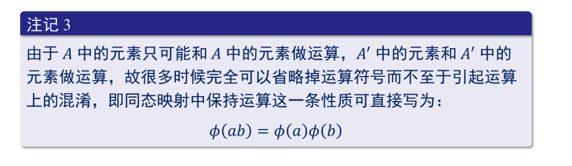
群的定义

二元运算：设S为一个非空集合，则S×S到S的一个映射称为S上的一个二元运算，并将（a，b）映射的像记作ab，或为了区分写成a·b或a＋b。
二元运算具有封闭性与顺序性，即ab不一定等于ba
乘群：逆元，单位元
加群：负元，零元
若群满足交换律，则称作交换群，即Abel群
群的基本性质
- 群中的单位元是唯一的
- 群满足消去律（一般对于乘法群提出这个概念）
- 若G是群 <=> 则对于任意a，b∈G，方程ax = b，ya = b有解；G运算封闭且满足结合律
- 非空有限集合G中的运算满足封闭与集合律，则它是一个群的充分必要条件是满足消去律
一些群的记法


阶
G为群，a为其中元素，若存在正整数d使得 \(a^b = e\),则满足上述条件最小的正整数成为a的阶，几位o（a）。若d不存在，则称\[o（a） = \infty\] .

阶数公式
\[o(a^r) = n/d , d=(r,n)\]
Lagrange定理

子群
定义

平凡子群
G和{e}
子群判定定理

若H是G的子群，则H中的单位元就是G中的单位元，H中的任意元a在H中的逆元等于在G中的逆元。
有限子群的判定定理
G是H的非空子集，任意a，b∈H，a·b∈H，则G是H的子群
等价关系
1.自反律
2.对称律
3.传递律
陪集
设G为一个群，H≤G是G的子群，定义a~b当且仅当a\(b^{-1}\)∈H，且可以证明其是一种等价关系，而有该等价关系决定的等价类就叫做子群H的右陪集，即与a等价的元素全体，用Ha表示。

左陪集与右陪集的关系
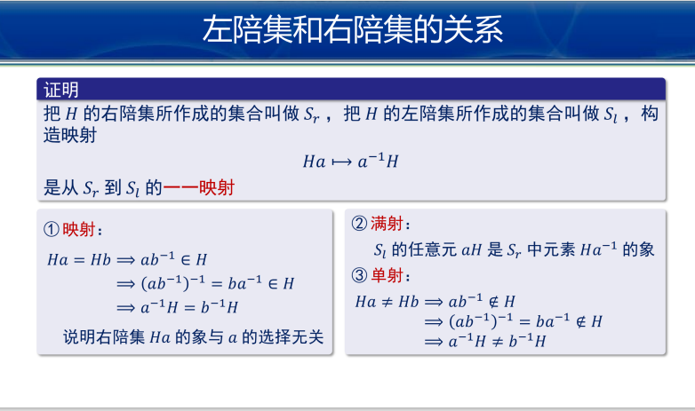
指数
定义
子群H的左陪集或右陪集的个数
公式
\[[G:H] = |G|/|H|\]
凯莱定理
任何一个群都与一个变换群同构。即从同构意义上来说，每个抽象群都可以看做是一个变换群。
循环置换
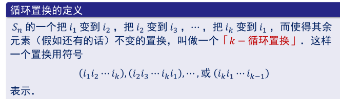
性质
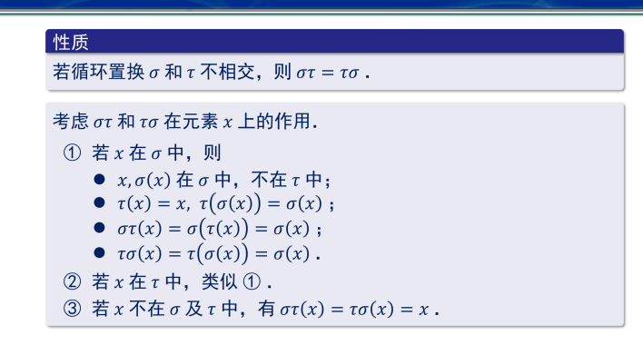
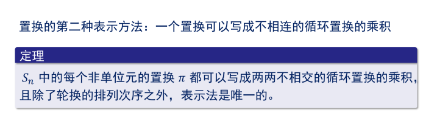
正规子群
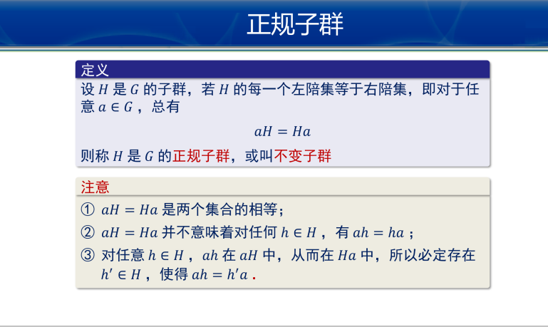
循环群
定义
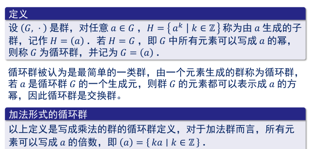
分类
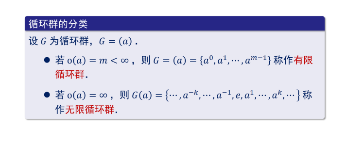
例子
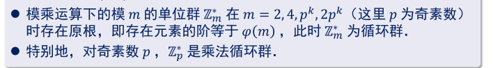
无限循环群的生成元
循环群的同构定理
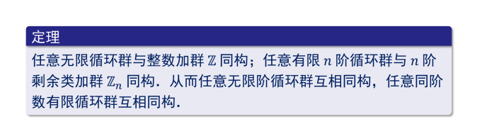
循环群的子群仍是循环群
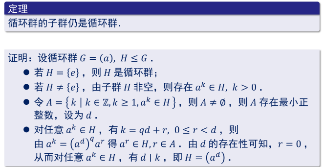
且若G是n阶循环群，d|n，则存在且仅存在唯一一个阶为d的子群
环
定义
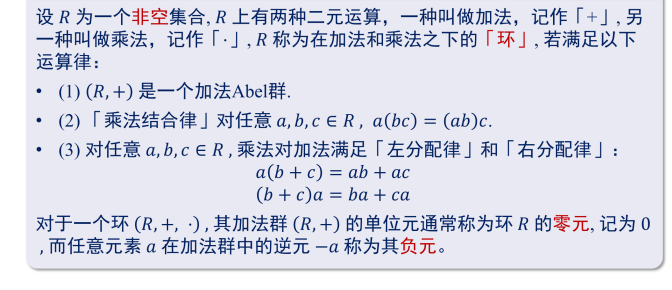
进一步的 还有带单位元的环 交换环 无零因子环 整环 除环 等概念
除环
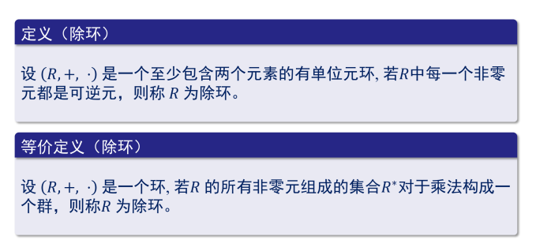
性质
环中二项式定理不一定成立 需要交换律
子环
定义
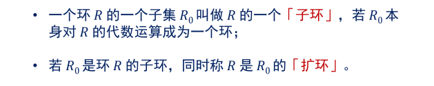
性质
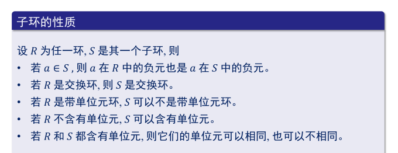
逆元也可能相同或者不同
子环的判定定理
环的同构
定义
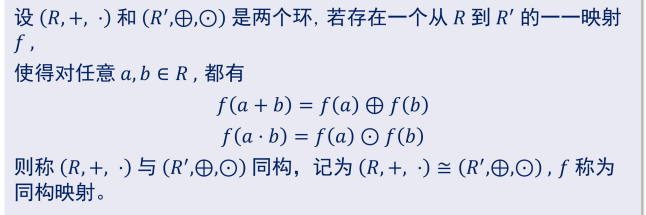
性质
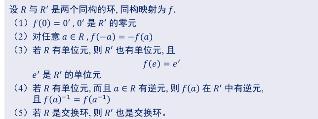
无零因子环和整环
零因子
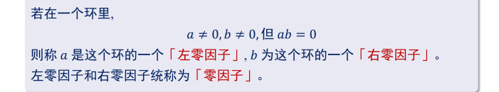
R为环，则其中消去律成立当且仅当R中不含零因子
无零因子环
性质
无零因子环R中所有的非零元对于加法的阶相等
有零因子环不具有该性质
特征
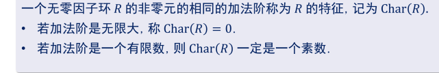
整环
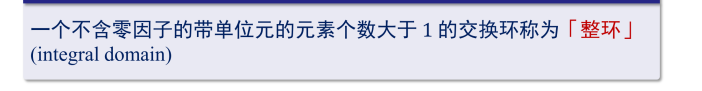
分式域
构造
性质
整环
整除性理论
整除定义
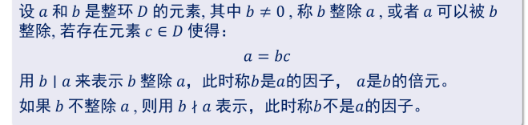
注：
单位
相伴元
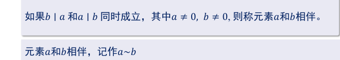
整环上的相伴关系是一个等价关系
全体单位构成的集合在整环的乘法之下构成一个群
整除性
不可约元
整环D中一个非零非单位的元素a没有真因子，则称为不可约元
素元
整环D中一个非零非单位的元素p称为素元，若满足只要p|ab,则p|a或者p|b
注：
整环中 素元都是不可约元 但是不可约元不一定是素元
在唯一分解整环中，不可约元与素元等价
唯一分解
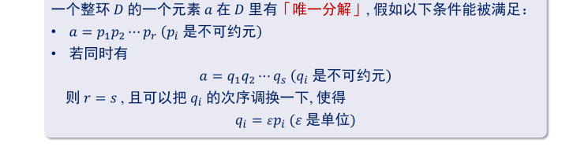
唯一分解只针对非零非单位元
唯一分解整环
定义
例子
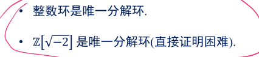
PS：Z[i]
重要性质
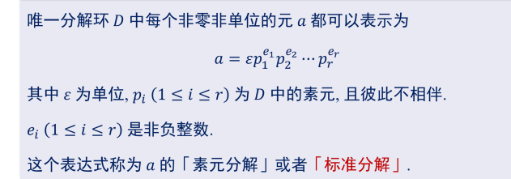
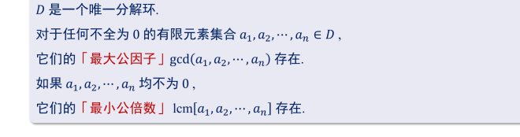
互素
注意这里用的是等价符号，而不是等号
最大公因子的性质
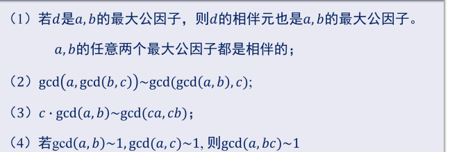
参考整数域的最大公因子的性质即可
环上的多项式环
定义
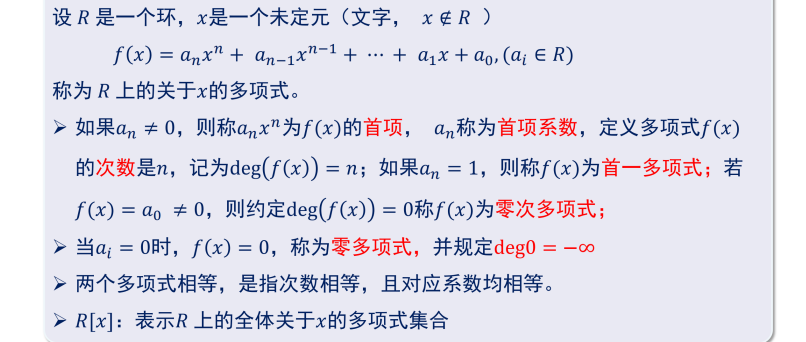
x不∈R是非常容易忽视的地方 不知道这里有没有问题
运算
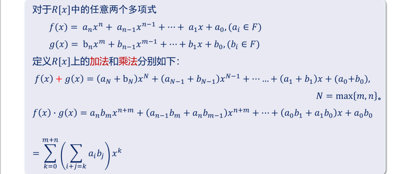
性质
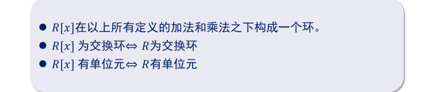
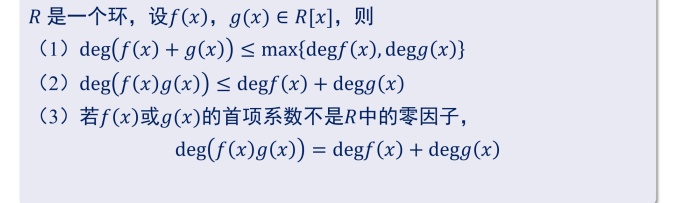
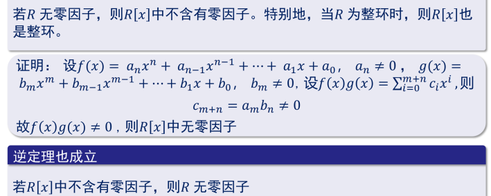
多项式的带余除法
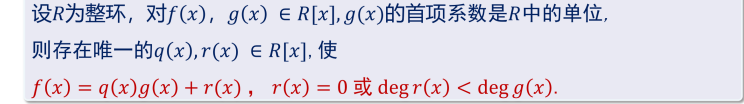
多项式的取值
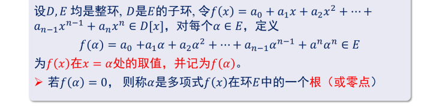
因式定理
重要定理！
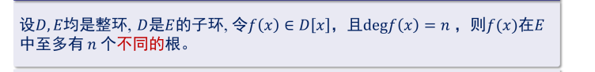
推论：
定理中无零因子和乘法交换性两个条件是必要的
域
定义
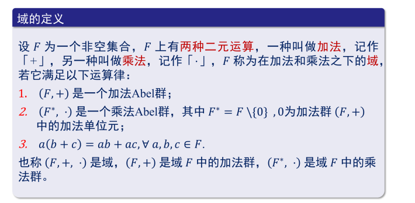
运算
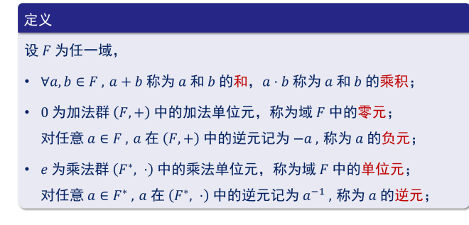
例子
- 有理数域（Q）：包含所有可以表示为分数的数。它是一个可数域，也是一个域。
- 实数域（R）：包含所有实数。它是一个无限可数域，也是一个域。
- 复数域（C）：包含所有复数，其中复数可以写成 a+bi 的形式，其中 a 和 b 是实数，i 是虚数单位。它也是一个域。
- 有限域：包含有限个元素的域，其中最常见的是包含素数个元素的域，也称为 Galois 域（Fp）。例如，F2 包含 0 和 1 两个元素，F3 包含 0、1 和 2 三个元素。
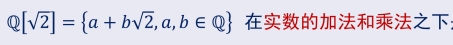
子域
定义
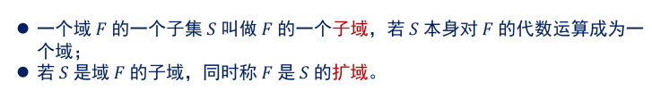
性质
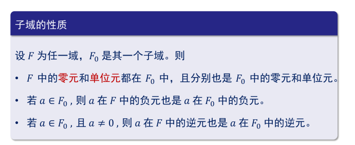
判定定理
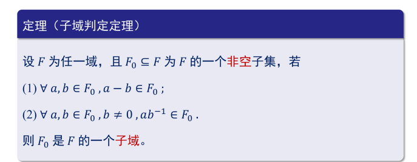
置于域的运算性质 可参考 有理数域
域的特征
定义
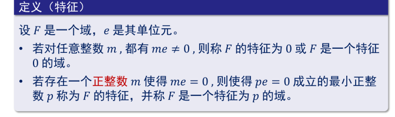
定理
若F是一个域，则F的特征是0，或者是一个素数
特征性质
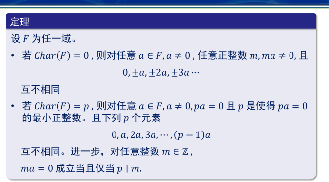
推论
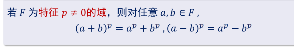
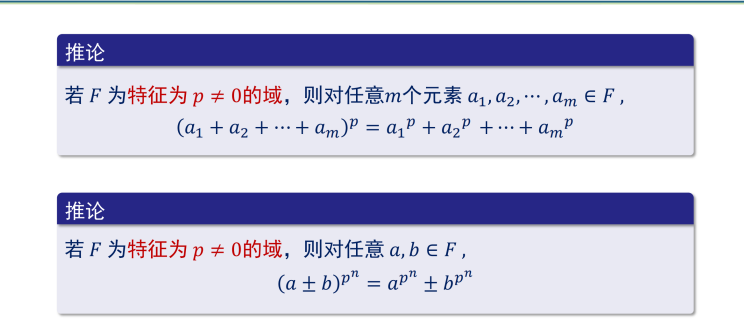
域的同构
定义
性质
同构的两个域抽象上是一样的
同构的域特征相同
域的自同构
定义
设F是一个域，则称F到其自身的同构映射为自同构映射
定理
素子域
F的素子域是F的最小子域
特征为P的域F的素子域都同构于\(Z^p\)
特征为0的域F的素子域都同构于Q
域上多项式环的性质
最大公因式
欧几里得算法
例子：
不可约多项式
不可约多项式的性质
域上的多项式环是唯一分解环
因式分解定理
因为规定了首一所以使得这里可以直接用等号
==Eisenstein判别法==
例：
域的构造
交换环上的同余关系
剩余类与其性质
剩余类环
剩余类环的性质
R有零因子时，其剩余类环可以有零因子也可以没有零因子
R没有零因子时，其剩余类环可以有零因子也可以没有零因子
唯一分解环的剩余类环
域上多项式环的剩余类环
且称其为F[X]模f[x] 的剩余类域